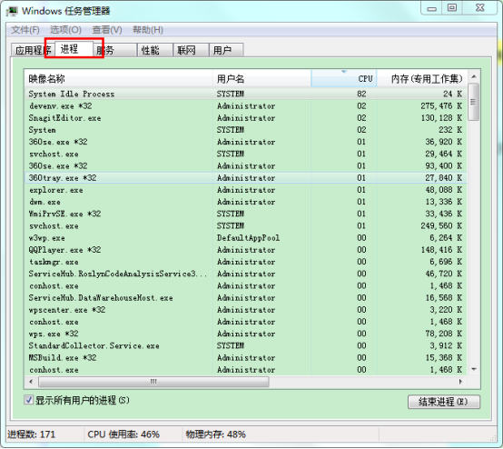
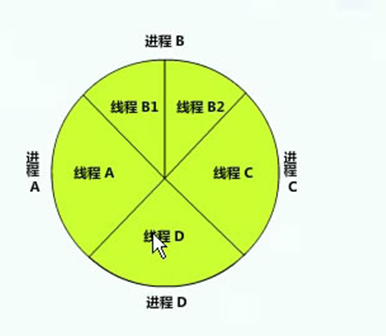
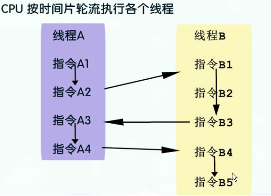

系统为应用程序分配所需的内存以及其他资源，内存和资源的物理分离叫做进程。

进程是以线程为单位竞争CPU，那么什么是线程呢？
线程可看成一个可执行的指令单元，他使用进程中的数据，包含若干条指令，进程与线程的对应是一对多

这五个线程会轮流竞争CPU资源。
CPU按 时间片 轮流执行各个线程

操作系统提供一套线程调度的算法，编写的.Net程序运行时默认会对应一个线程，称之为主线程，如果需要在.Net程序中启动更多的线程，就需要接触到多线程编程相关的一些类。